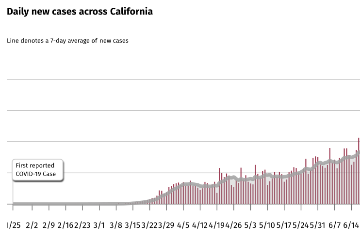
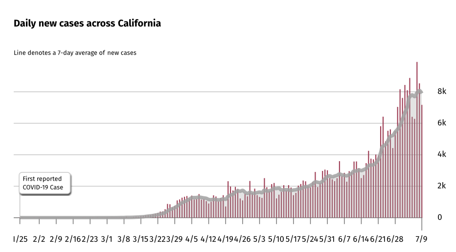

Exploring why misjudgements about trends cause us to stray away from the correct response and solution.
Looking at graphs can be scary, especially when there is a straight upward trend that does not seem to fall.
Though this emotion is important to create a sense of urgency, we should not allow our false judgments to blind us from the correct response.
A month ago, my friend introduced me to a book called Factfulness by Hans Rosling. In this book, Rosling debunks ten negative assumptions about global trends for population,
education, poverty, and more, and explains the habits of mind that cause us and even experts to make these illogical conclusions.
His personal stories of his experiences in healthcare are not only riveting but also closely related to our current events with COVID-19.
The chapter that caught my eye was his explanation of the straight-line instinct. As I read about his reaction to seeing the doubling numbers of outbreaks of Ebola in West Africa,
it reminded me of my reaction to seeing trends of daily COVID-19 cases in California.

This graph shows the daily new cases in California from the first reported case to June 14th. When looking at it, how do you feel?
If you feel hopeless and scared, me too. And probably millions of people do too.
Now, what do you see? Do your eyes imagine the line extending upwards at a straight line? Again, me too, but unfortunately that is wrong.
Rosling explains that this assumption is natural as it is caused by an automatic visual forecasting skill that helps us predict the trajectory of a pebble or a moving car.
Though this skill keeps us alive and alert, it is not always reliable as it strays from the bigger picture. Rosling writes, “Any two connected points look like a straight line
but when we have three points we can distinguish between a straight line and the start of what may be a doubling line”, S-bend, or a hump (99). For example, when looking at the trend
for population growth in the past 50 years, the line appears straight, causing us to believe that the human population will not stop growing, however, UN experts predict that the line will flatten due
to the fact that the number of children has already stopped increasing.
Now let me show you the rest of the graph.

If we look at the last month, we can see that the straight line we previously imagined is incorrect. The line is actually curving upward, causing a greater sense of urgency to loom over us.
Now that our emotions are amplified, we feel the need to play a bigger part in flattening the curve.
This is important as failing to realize that a straight line is actually a part of a curve leads us towards the wrong solution or response. When Rosling assumed that the 2014 trend of Ebola in West Africa was a straight line,
he focused on other unrelated business and planned on spending the holidays with his family. As soon as he looked closely at the doubling numbers, he switched his priorities and cancelled all his plans for the next three months to
gather information that called for immediate action from the world.
Prior to looking closely at graphs and trends of COVID-19, I did not think much of the dire situation that we are in. I practiced simple preventative measures such as wearing a mask and social-distancing but did not feel the need for a greater,
immediate response from myself. However, having looked closely at the recent trend and realizing that it is not what I expected, I feel more passionate for our project’s mission and am proud to have corrected this habit of mind to fight the virus in my community.
And that is what I believe to be the first step — the biggest step — towards being the change I want to see in the world.